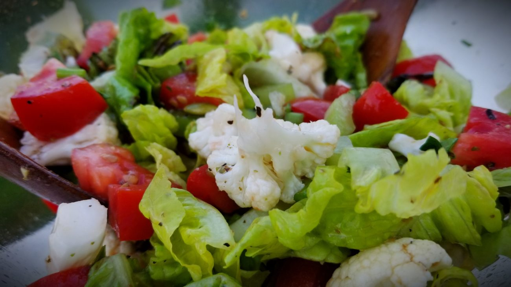

Салат со свежей цветной капустой

В Америке мы подсели на сырую цветную капусту.
Помимо того, что это замечательный снек с соусом «Ранч», из нее получается отличный салат со свежими овощами. Причем, если его заправить нерафинированным, запашистым подсолнечным маслом, то получается очень необычно.
Все настолько просто, что даже расписывать смысла нет, но салат очень вкусный и интересный. Идеально и к мясным фрикаделькам с рисом и к стейку с кровью.
Все порезать как нравится, заправить специями, солью, винным уксусом, нерафинированным подсолнечным маслом. И вишенка на торте — семечки подсолнечника и тыквы.
Ингридиенты
- 0.5 кочана Капуста цветная
- 3 шт. Помидоры свежие
- 3 стебля Сельдерей
- 1 кочан Салат латук
- 0.5 пучка Петрушка
- 50 гр. Масло подсолнечное
- немного Семя подсолнечника
- немного Семя тыквы
- 0.5 чайной ложки Соль
- 0.5 чайной ложки Перец черный молотый
- 0.5 чайной ложки Перец черный молотый
- 0.5 чайной ложки Перец черный молотый